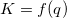
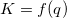
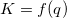

in einer komplexen Gleichung  zu berechnen, können Sie die Gleichung zuerst in diese Form übersetzen:
in einer komplexen Gleichung  zu berechnen, können Sie die Gleichung zuerst in diese Form übersetzen:Letztes Update: 10.02.2015
Um den Parameter in einer komplexen Gleichung  zu berechnen, können Sie die Gleichung zuerst in diese Form übersetzen:
-K") ,
,
und dann den -Wert berechnen, wenn  . Sie müssen eine Vorstellung von dem Bereich haben, in dem sich befindet, zum Beispiel von
. Sie müssen eine Vorstellung von dem Bereich haben, in dem sich befindet, zum Beispiel von  bis . Verwenden Sie den Dialog Werte setzen, um die Y-Werte zu berechnen, wenn
bis . Verwenden Sie den Dialog Werte setzen, um die Y-Werte zu berechnen, wenn  . Verwenden Sie dann levelcrossing oder das Minitool Kurvenschnittpunkte, um den genauen -Wert zu finden, der ergibt.
. Verwenden Sie dann levelcrossing oder das Minitool Kurvenschnittpunkte, um den genauen -Wert zu finden, der ergibt.
Schlüsselwörter:Formel, Dialog Werte setzen
Origin-Version mind. erforderlich: 8.6